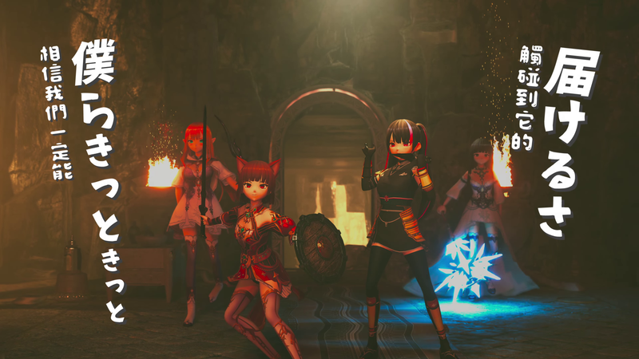
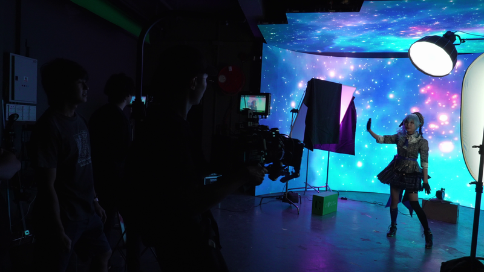
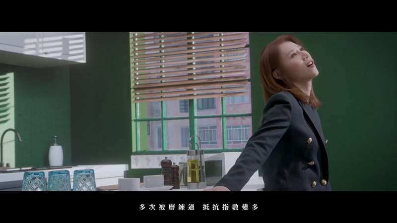

Virtual Production
乙女新夢 / 【平行幻想 Parallel Phantasia】
乙女新夢 / 【平行幻想 Parallel Phantasia】 is a selected Virtual Production project by Imagine Division.
View Project
Services
Virtual Production combines Unreal Engine 5, virtual filming, and mixed reality environments for entertainment, education, and commercial applications.
Key Services
Selected Projects

Virtual Production
乙女新夢 / 【平行幻想 Parallel Phantasia】 is a selected Virtual Production project by Imagine Division.
View Project
Virtual Production
GHOST - 星街すいせい Cosplay Music Video is a selected Virtual Production project by Imagine Division.
View Project
Virtual Production
彭家麗 Angela Pang - 是不是這樣的痛過人才算真正的成長過 (Official Music Video) is a selected Virtual Production project by Imagine Division.
View Project